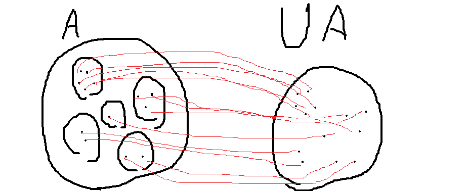

この公理は集合に対して中身の中身を集める操作ができるというものです． つまり，中の集合を全部合体させた集合が作れます． これを和集合といい，\(\bigcup A\)と表します． また，有限集合\(A=\{a_0,a_1,...,a_n\}\)の和集合は\(a_0 \cup a_1 \cup ... \cup a_n\)のように表すこともできます．
対の公理\(\forall x \forall y \exists z ( x \in z \land y \in z)\)によって集合\(x\)から集合\(\{x,\{x\}\}\)が作れます． これの和集合は\(x\cup \{x\}\)となります． これを\(S(x)\)と表し，後者関数，次の数と呼ぶことにします． このとき以下が成り立ちます． $$1=S(0)$$ $$2=S(1)$$ これ以降の自然数は次のように定義します． $$3=S(2)=\{0,1,2\}$$ $$4=S(3)=\{0,1,2,3\}$$ $$5=S(4)=\{0,1,2,3,4\}$$ このようにすることですべての自然数を定義できました． 自然数はそれ未満の自然数の集合になっていて元の数はその自然数自身になっています．
